排片质量智能评估系统是面向院线管理人员、财务人员开发的一款产品。
它的评估准则是：
（1）、让院线财务人员一目了然的看到排片的标准性
（2）、相关报表统计可以提高院线管理人员的管理效率
（3）、独创性、科学性、动态智能、伸缩性
（4）、内置小工具能够方便、快速调整排片
使用 排片质量智能评估系统，不仅能帮助您合理排片，从而提高每日观影人数，同时将排片规范完美的呈现到您的面前，解决了您对如何排片、的不解与困扰，还能为您提供如下信息：（1）每家影院票房与系统模拟票房的对比结果（2）更好的管理名下属于影院（3）各种格式的输出文件。
用户打开浏览器，在地址栏输入影院智能排片网址：http://123.57.37.121:8080/audit-system/login.html 进入计算机辅助排片系统登录首页。转入管理员分配账，点击“登录”就进入到我们系统中了。如下图所示
如果您是新用户，进入之后会看到影院管理的影院分组页，可以看到默认分组中的影院列表，如下图：
新用户：奥斯卡院线 用户名：audit-oscar-test@126.com 密码：123456
1）、输入用户名登录到系统
2）、进入到系统中，此时可以选择给名下影院分组，方便日后管理和做对比统计。（非必操作）
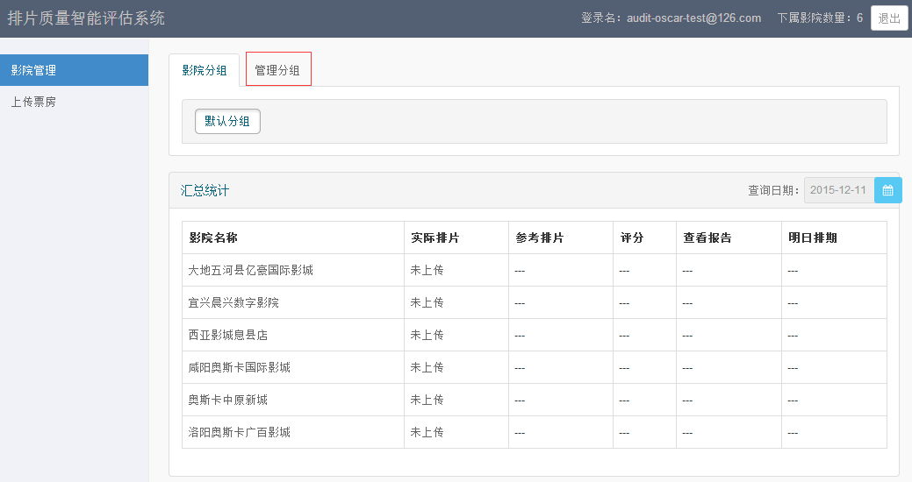
管理分组如下图：
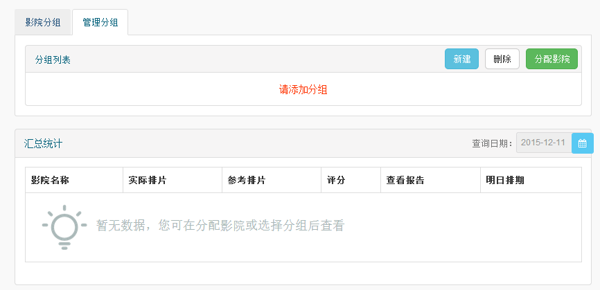
新用户需要新建分组：
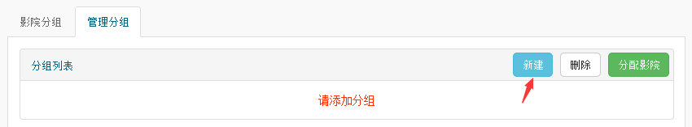
输入您要新建的分组名，点击保存更新
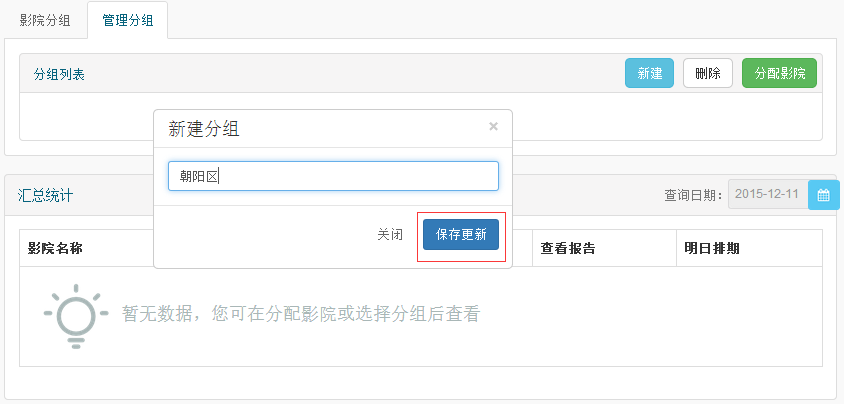
完成如下图：
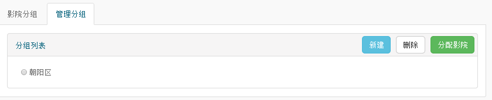
接下来就需要给“朝阳区”分配影院，选中分组名称，点击分配影院，会弹出影院列表。选中保存即分配成功。
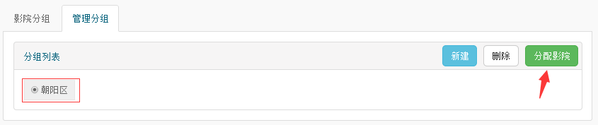
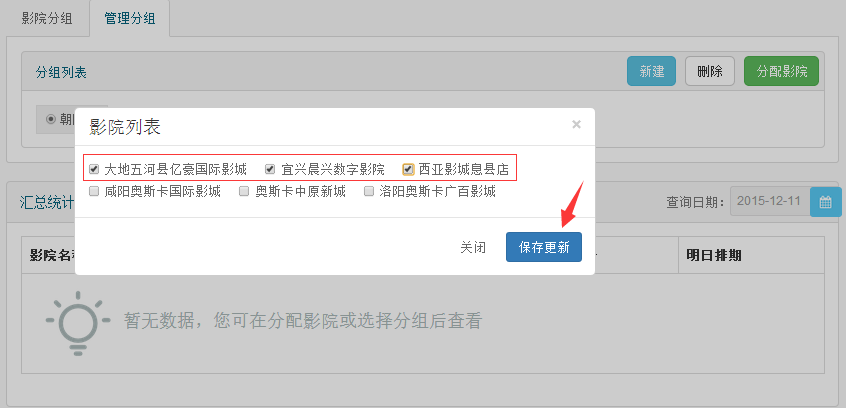
完成如下图：
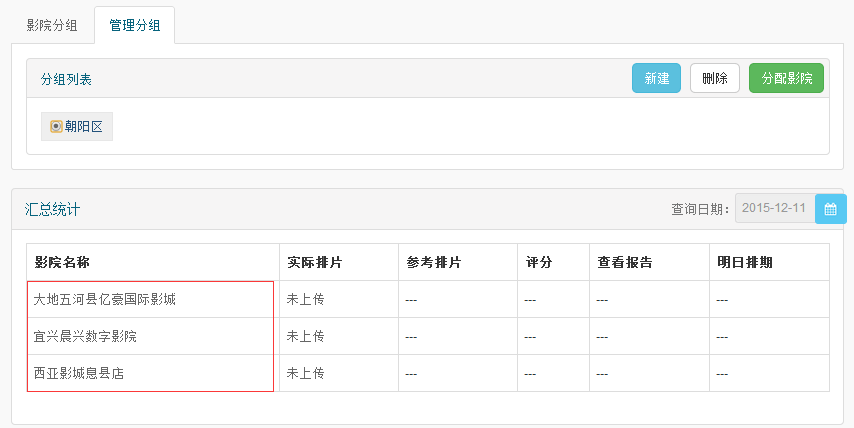
删除影院分组，该分组下的影院会重新回归到未分配影院列表中，需要重新分配
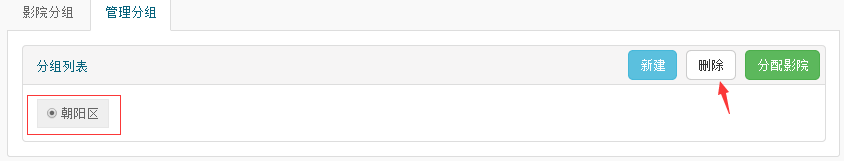
3）、如果想查看影院的和系统的汇总数据，需要先手动上传该影院票房，系统根据影院票房明细推算出对比结果。
如果上传数据有未匹配的影片，需要手动的选择片源匹配，点击提交，完成票房上传。
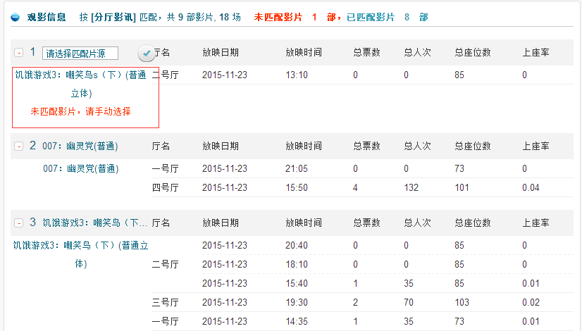
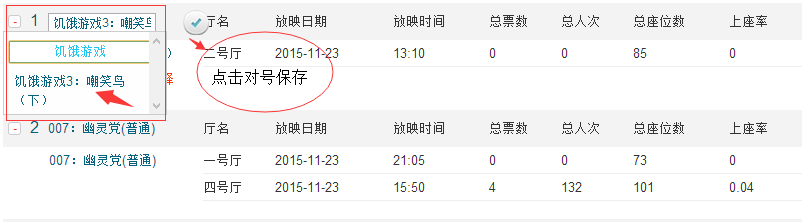
完成上传票房后到影院管理页查看该影院和系统的对比结果。其中（影院名称、实际排片、参考排片、查看报告、明日排期）可以点击查看详细数据。
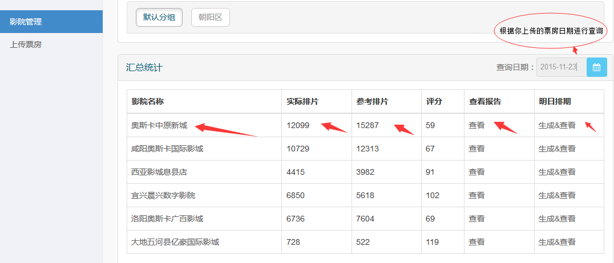
1、选择影院名称可以查看系统生成的排期明细数据（排期展示、按影厅展示、按影片展示、分时段统计，其中时段又分为黄金时段和非黄金时段），还可以查看该影院的详细信息。
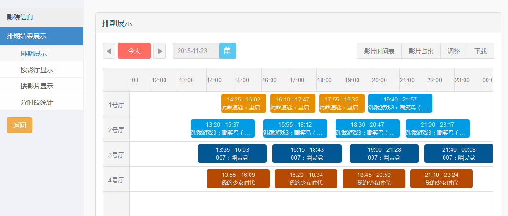
影院信息
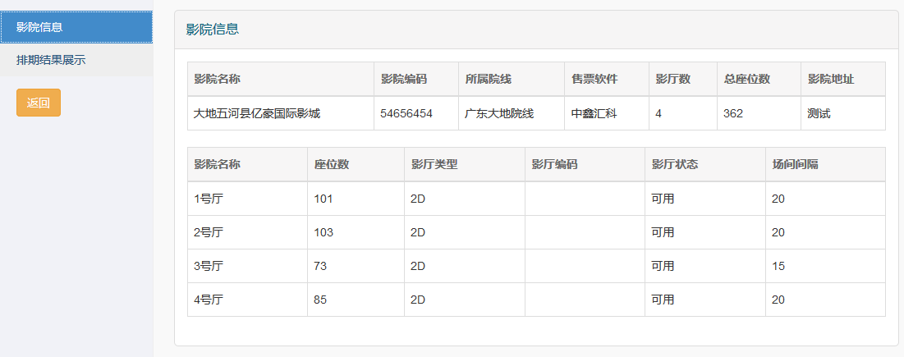
2、点击查看实际排片会跳转到当日实际场次分析页，这里的数据是根据上传的票房生成的。
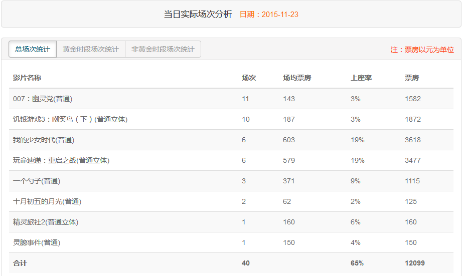
3、点击查看参考排片的数据会跳转到系统预测可达票房页，这里的票房数据是依据上传票房中同样影片的场均票房和大盘数据推算出的，例如，实际影院和系统都排了“幽灵党”这部电影，实际影院中幽灵党的场均是143，那么系统中幽灵党的票房就等于场次*场均143。如果实际影院没有排“幽灵党”，而系统排了，那系统中幽灵党的票房=用实际影院排的主打片场均票房/(大盘当日票房最高影片的场均票房/大盘当日幽灵党的场均票房)。
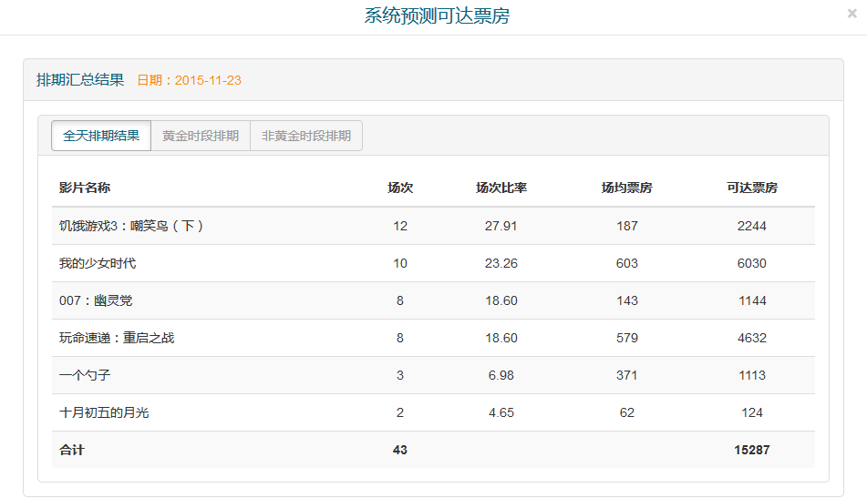
4、评分机制：因为系统预测可达票房是根据大盘票房、大盘排期、上传影片场均推算出的，大数据分析得出。所以这里设系统算出的可达票房为80分为标准排期，这样是您一眼可以明确知道自己影院排期的情况。
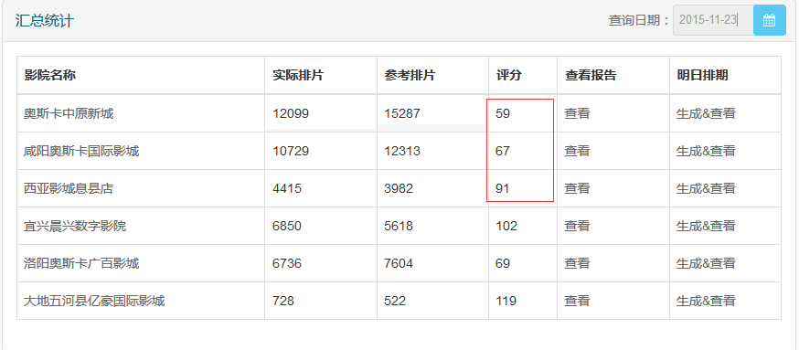
5、查看报告：系统在这里做个温馨提示，如果您影院的排期票房低于系统可达票房，报告会分析您排期中每一部影片的问题所在。方便您以后更好的排期。
6、生成明日排期。
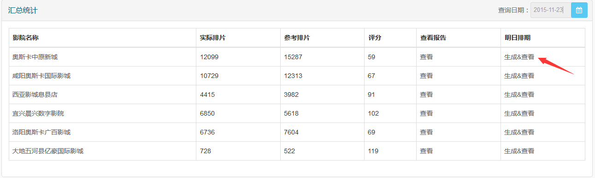
下面是从大盘上抓取的明日排期数据，点击生成排期；
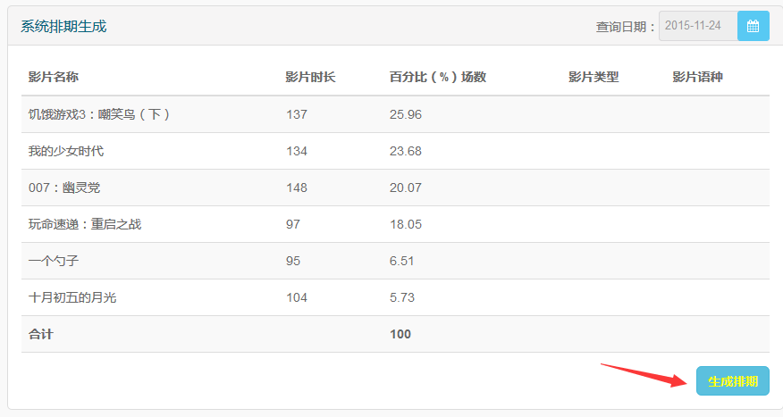
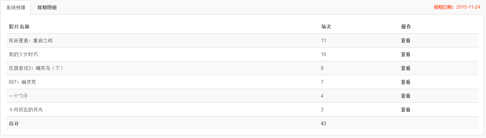
可以查看排期明细和历史排期。
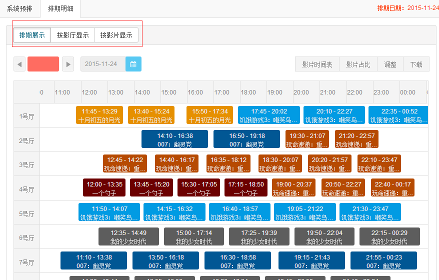
另外，部分新功能还在持续开发中。。。
在使用中遇到问题：可以加入到我们的影院排片经理QQ群：471565587
微信名称：排片机器人
微信号：snoopy_stone
二维码：
随时解答你在使用中的疑问！！